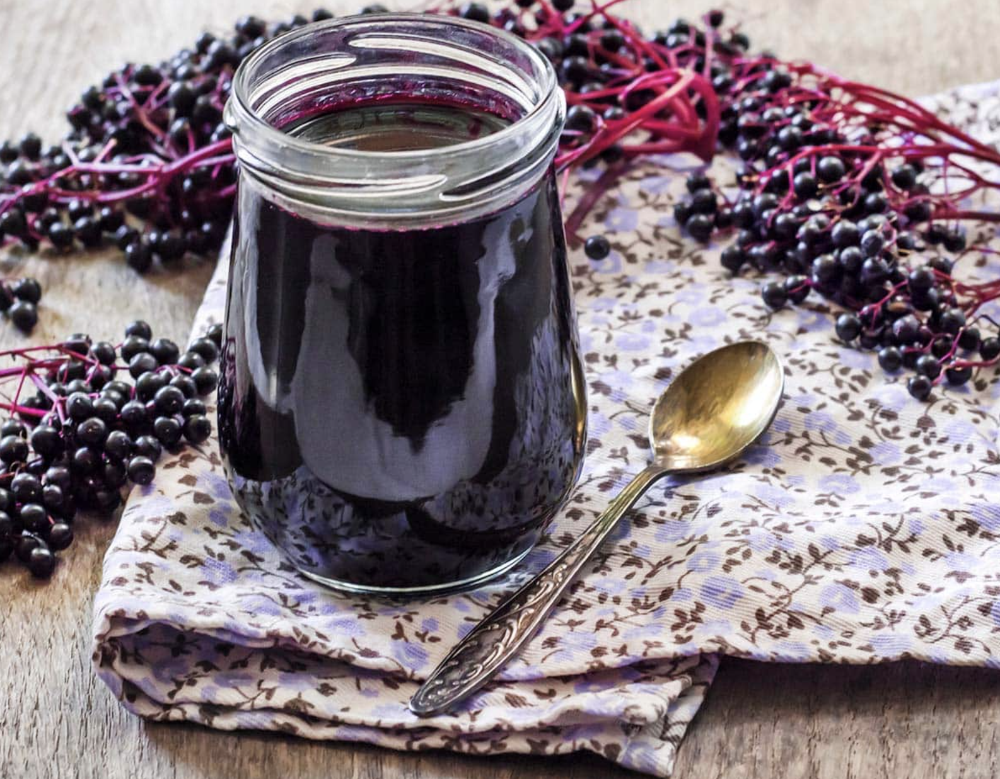

Homemade Elderberry Syrup

Elderberry Syrup
If your are looking for an immune system boost, elderberry syrup is one of the best homemade herbal remedies you could make. By taking advantage of the natural antiviral properties the berries provide this syrup can help you during cold and flu season. The best part about this immune support is that it is sweet and delicious.
Ingredients
- 6 cups of fresh elderberries (or 3 cups dried)
- 6 cups of water
- 2 1/2 cups honey
Steps
- Remove stems and unripe berries and rise all ripe berries.
- Add water and berries to a pot.
- Bring water and berries to a boil over medium heat, reduce the heat and simmer, uncovered, until reduced by about half (about an hour).
- Remove the pot from heat and allow to cool for at least 30 minutes.
- Using a fine mesh sieve, strain out the elderberries pressing on the berries to get all of the liquid out. Discard the berries
- While the mixture is still warm, add honey and stir until it is dissolved.
- Pour the elderberry syrup into jars.
- Let the syrup cool completely before refrigerating.
- Store in the refrigerator for up to 6 months.